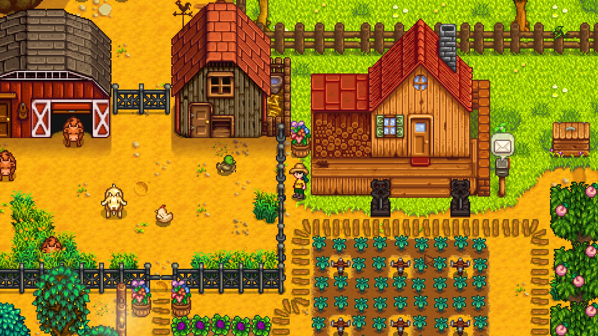
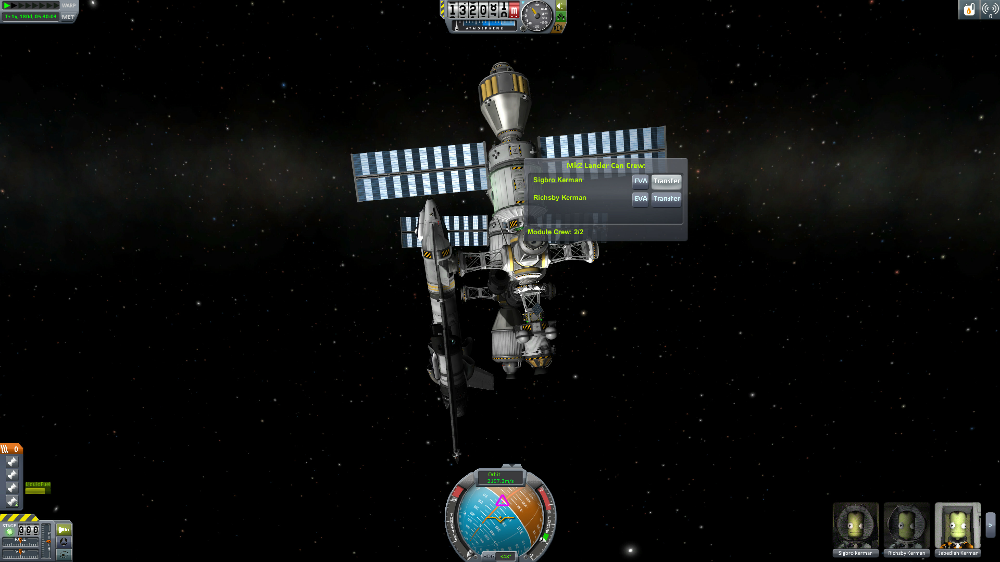
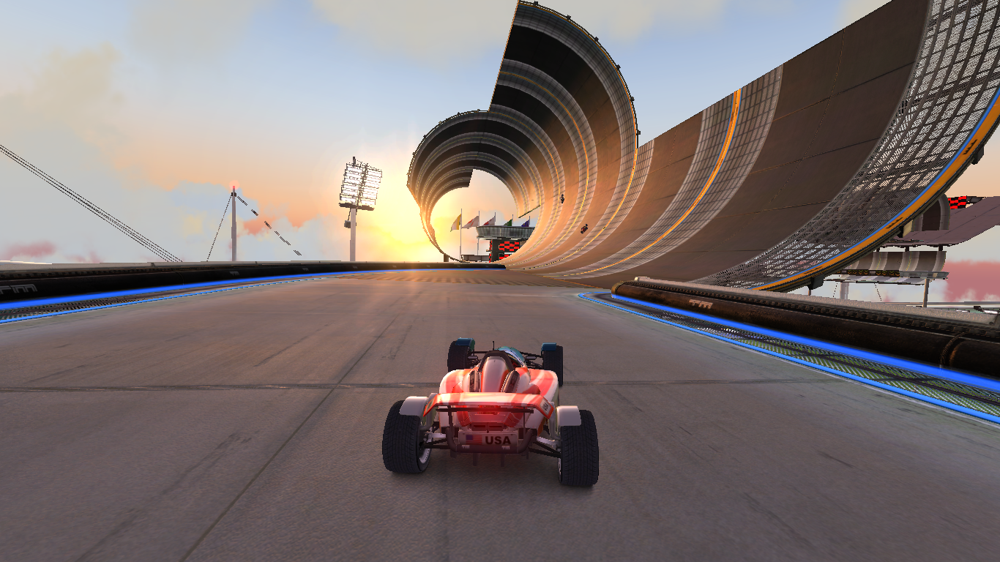

Games I play
Stardew Valley
Stardew Valley is a game where you inherit a farm from your grandfather and you slowly build up your farm, relationships and a bunch of other things. It's a really chill game with no real direct path the game tells you to follow and you have the choice about what to do. I really like this choice as this means that each player will have a unique experience and they have a ton of flexibility of what they do. I also like the relaxing and chill vibe the game has which mean you can practically play the game whenever you want and it's pretty relaxing. Overall this is a really well made game and the fact that you have control over what you do is also very good.
Kerbal Space Program
Kerbal Space Program is a game where you create and launch space rockets and expand. It's a pretty interesting game but it's difficult to grasp the games mechanics at first but after a while or noting them down somewhere you get used to it. New players might be discouraged to play due to its complexity but if they work on it they will find a great game inside. I really like this game even though it has a steep learning curve because its really well made and once you get into the meat of it, it becomes a really fun game.
TrackMania Nations Forever
TrackMania Nations Forever is a game where you race against other cars and try to get the best times. It has a single player mode and a multiplayer mode. It's a really addictive game and you can find yourself sitting in front of the screen for hours at a time trying to get a good time. The multiplayer mode is also good as it has a variety of servers which host a ton of different maps for you to practice on. Even though the game was released in 2008 it still holds up today with an active community. Overall its and addictive game and although the graphics may be a bit old the game still has a active playerbase and plenty of content.
Osu! or Opsu!
Osu is a game